| Match Report - 10 April 2010 |
|
|
|
|
|
|
|
|
|
|
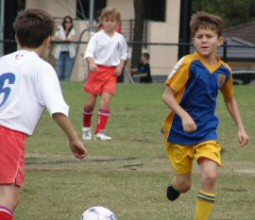
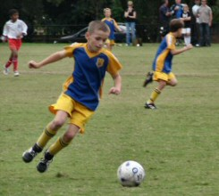
And they're off! The start of the 2010 season for this U10 outfit was also the dawn
of the real deal in their young football careers. The field was a whole lot bigger
than it was last year, and the increased playing time of 25 minutes per half meant
that all the players could look forward to a much higher work rate than they were
accustomed to.

The goals were also a lot bigger, and Tim was eyeing the gap between his outstretched
hand and the top post with a certain amount of despair. But they did at least come
with netting which meant that we wouldn't have to refer to any camera or video
footage to verify whether a goal had been scored or not.
The West Pennant Hills team remains one of North Ryde's most evenly and fiercely
contested rivals in the GHFA competition, and it was clear that this year was not
going to be an exception. The game started at pace as both sides vied to dominate
the other, but it was North Ryde who gained the upper hand in the initial rallies
and put a lot of pressure on the WPH defence.
Their teamwork and passing game from end to end was remarkable and it took them just
seconds to move the ball from the back line to the front line. They eventually found
a gap after repeated assaults on the WPH defence and Tom M found the space to power
a shot past the goal keeper into the right-hand corner of the net. The goal added
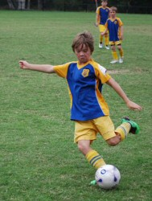
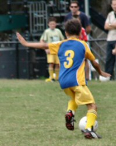
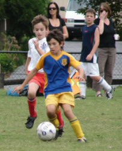
impetus to North Ryde's resolve and they maintained the tempo of their game for the
remainder of the first half, including several more attempts at goal, most of which
were well kept saved by the WPH keeper.
WPH came out firing in the second half with an obvious determination to level the
score line, and the North Ryde line of defence had their work cut out keeping the
WPH forwards at bay. They did though, moving swiftly to shut down any build-up of
offensive play that threatened the goal line, and Tim the keeper was up to the task
on each occasion that WPH did manage to break through and have a shot at goal.
WPH were persistent though, and as often happens in these pressure situations, were
awarded a direct penalty off an unfortunate handball in front of the goals. Tim's
eyes were wide in anticipation of the shot, but relieved a second later as it sailed
harmlessly over the top bar. WPH may have felt compensated, however, when the exact
same thing happened in front of their own goals later on in the game. North Ryde was
awarded a direct penalty when a North Ryde shot on goal struck a WPH's defender
unintentionally on the hand, but Eli's attempt also drifted over the top bar and we
were obliged to conclude in an after-match examination of the ball that it had
probably been too soft and light for the game. Well, that the theory we're going
with anyway.
With about 15 minutes of the second half left, North Ryde re-discovered their form
with a new injection of energy and were moving the ball from back to front at pace
again. And with what was probably their best move of the match, David thumped a pass
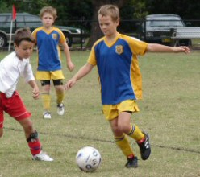
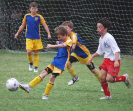
to Shannon down the right line, who fed a perfectly timed cross through to the centre
and gave Adam the perfect opportunity to have a shot at goal and put North Ryde up
another goal. Which he did, decisively.
The goal put the wind back into the North Ryde sails and the 2-goal cushion allowed
them to play with renewed confidence and determination again. Of note were the
remarkable number of 50-50 wins the players had against their opposite numbers, of
which Charlie and Tom H in their defensive positions could probably claim the lion's
share. It frustrated and took the steam out of the WPH attack and set up several
opportunities for the North Ryde midfield and forward players to rush at the goals
again. Adam again finished off one of these movements in style with a left-foot punch
shot that ran behind the keeper who had come tearing out to intercept, and rolled
unharmed into the back of the WPH net.
The final score was 3 - 0 to North Ryde. A terrific win for the team and a great start
to their 2010 season. They have a lot of positives they can take with them into their
next game, and can be well proud of their fitness which saw them handle fifty minutes
on a full-size field with relative ease. Although, it must be said, there were plenty
of empty water-bottles lying about within minutes of the full-time whistle.

- Mark Howard
|
|
|
|
|
|
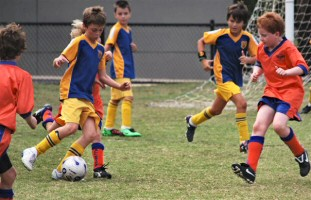
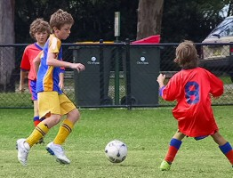
The excitement was building for the first game of the season as we awaited the
kick-off. A brand new team with players that have come from an array of different
North Ryde teams and 6 that are playing up an age group. The Truscott St team of
years past has now dwindled to just two players and we are now multi-scholarly!
Team spirit is high and it would appear once these boys meld together that they
could prove a handful to play against. The players were gathered, the air was full
of nervous energy and the whistle blew. They were off. A full size field and
11-a-side ...
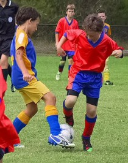
Well almost. We started with 10 and Sam's younger brother Alex raced
home to get his gear on so he could help - thanks Alex. Then Thomas Harte turned up
just before half time, fresh from his game and a few minutes later the cavalry
arrived - almost half the Div 5 team arrived after their game had finished ...
well at least Adam, Seb, Ben and Ethan. Thanks guys.
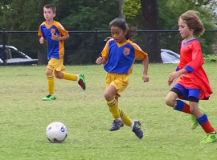
Anyway, back to the game. Nth Ryde started well and it was fairly even for the first
10 - 15 minutes but the remainder of the half was dominated by All Saints and we kept
them at bay with dogged determination, good recoveries from Saxon & strong goalkeeping
from Jack. Alvin and Andrhea had their work cut out for them at the back but we managed
to hold on until half time ...
Nil all.
The second half was full of invention with Jack performing his best impression of
George Best with his dribbling skills mesmerising the opposition. Many attempts on
goals were made but All Saints always had a mountain of players blocking the goal.
Their counter-attacks were always swift and direct.
Matthew and Saxon swapped roles at half time and Matt had to react sharply to All
Saints penetrating runs. Thomas Harte also performed admirably in goals with some
fine saves during the half but on one of their quick raids we were caught out and now
down one goal. We continued to press with most of our players pushing up. Harrison and
Thomas gave their full effort but were unable to break down the defence whilst Peter,
Sam & Anthony worked tirelessly to support their team mates from midfield. In the end
tiredness and the final whistle got the best of us.
An admirable performance with a game that was tense and could have gone either way.
- Allan Ball
|
|
|
|
|
|
The Under 11/2's started off the football season with an awesome game. Matt (as striker)
did an outstanding job, scoring two goals with the help of Lukas (our attacking mid).
Lukas also scored two goals, giving us the lead: 4 - 0.
Moving to the mids we had a combination of Lachlan, Aymon, Lukas and me. Lachlan and I
kept swapping from stopper and mid. Aymon scoring one goal, gave us the smashing score
of 5 - 0.
The backs were Morgan (centre back), Daniel M. (right back) and on our left we had Matia.
Morgan held the backs together and was strong and very fast in defence. Daniel M. proved
fast and strong in defending our right back as well. Matia was a good fit in left back
and has a cracking left foot (like Aymon).
Last but not least Daniel (our goal keeper) also had a fantastic game - he saved every
ball even on the wet grass which we had on game day (the wet grass made it a very fun
game!).
I think our team played very well as we were one short the entire game and obviously
could not sub-off. It meant lots of running but together we played a great game and
defeated a good team that had about 5 reserves! Well done everyone!
End score: 5 - 0 to us.
- Jay Butler
|
|
|
|
|
|
On a warm Sunday afternoon the proud men of North Ryde's finest arrived at L H Waud,
eagerly anticapating their first game of the season.
The game started at a cracking pace, with the blue and golds dictating play and
dominating the ball and field position, with numerous chances ringing off the posts...
then in the 7th minute a loose turnover on a courageous counter-attack saw our heroes
unluckily go a goal down.
The men re-grouped and again surged forward, trampling their foes underfoot as again
they took hold of the game by the scruff of its scrawny hairy neck... then in the 11th
minute a quality through ball with an equally as good finish saw the boys unbelievably
drop to a 2-nil deficit, completely against the run of play.

The rest of the first half was a battle for the boys as they pushed onward and forward,
whilst fending off fast-paced counter-attacks by a team who's confidence was high from
the amount of good fortune swinging their way.
Our heroes strode back onto the pitch for the second half with clenched jaws and a
steely glint in their eyes, ready to right the wrongs of the first half and pull lady
luck's dress right up over her head. Unfortunately disaster struck, a ferocious attack
which the blue and golds snuffed out on three occasions only to have the ball ricochet
back to the feet of their opponents, and saw the West Ryde forward nearly break his
fingers as he hand-balled the ball into the back of the net.
Again our heroes re-grouped, shook their heads at wonder as they realised they were
going to get none from lady luck this arvo.
They pushed on, and in the 62nd minute were finally rewarded with a brilliant strike
from "No Show Dan" that sailed past the keeper, lifting the spirits of his comrades
and striking fear into the now nervous opposition.
They now threw everything at West Ryde, playing at times only two at the back, clearly
"death or glory" is a motto that this team seems to bring to life, as caution blew away
in the breeze in a desperate attempt to see the good guys triumph.
A good tackle and a feminine dive saw the referee have his whistle in his mouth again,
and a defensive wall was set on North Ryde's 18-yard line. The West Ryde striker hit
the ball with everything he had, and the ball rocketed towards the stoic wall. The ball
cannoned into the face of one of these blue and gold men and then ricochet off straight
back over the striker's head, landing around the half way line. The only distress shown
from the man in the wall was his disappointment that he didn't control that thunderbolt
a little better as his nose was plastered across his face.
The game ended with a 3-1 loss to North Ryde's finest, but the guts and character shown
on that warm Sunday afternoon was something to behold, and if lady luck puts out, there
will be nothing stopping this team of champions from adding another trophy to their
already crowded cabinets.
- LJ Woodford
|